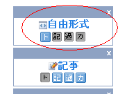

検索エンジン最適化でブログのアクセスアップ
ホームページと比較すると、ブログの場合は検索エンジンの最適化をしずらい面があります。
これはおそらく、最新記事を投稿する度にブログのコンテンツ内容がちょこちょこと変化することに原因があるものと思われます。
ブログでのSEO対策は複合キーワードがポイント
たいてい、最初の頃はブログのテーマにそったことを丁寧に書くものです。
けれども、次第に記事ネタがなくなってくると、関連性に多少無理のあることでも投稿してしまいがちです。
そうなると、サイトテーマとの関連性が次第に薄くなっていき、さまざまな複合キーワードでのアクセス数は多くなるものの、メインキーワードでのSEO効果が薄くなる傾向があります。
特定のキーワードでピンポイントに上位表示をめざすなら、ホームページの方が最適化しやすい傾向があります。
ですので、ブログで目指すべきSEO対策は、メインキーワードでの最適化はそこそこに、複合キーワードでのアクセスを主体にして最適化するのが効率的です。
ブログでのSEO対策のポイント
- 内容の薄いページを大量に作成しない
- トップページなどの上位階層を固定化
- サイトバーを整理
- 内部リンクの充実
【内容の薄いページを大量に作成しない】
ブログでは記事を増やしやすいメリットがある一方、内容の薄いページが大量に発生しやすい傾向があります。
なるべく、被リンクがひとつも付かないようなページの作成は避けましょう。
似たような記事を書く場合でも、追記の形をとって古いエントリーに書き加えるようにすることをおすすめします。
【トップページなどの上位階層を固定化】
被リンクが一番多く集まってくるブログのトップページは、SEO対策上かなり重要なページですが、一般的なブログでは、その重要な位置に最新エントリーが表示されるのが普通です。
ホットな話題に関する最新情報の場合は好都合ですが、特にどうでもいい記事を投稿してしまった場合、その記事が一番重要な位置に表示されることになってしまうのです。
それを避けるためにも、トップページの上部ぐらいはメインキーワードで固定して最適化した方がよいでしょう。キーワード密度なんかも調節して、ほったらかし状態にすることをおすすめします。
ちなみに、シーサーブログの場合は、トップページを固定することもできますし、カテゴリページの記事順も日付けをずらすことで変更することができます。
トップページを固定する際には、日付を未来にもっていく方法もありますが、それだと余計な過去ログが出力されてしまい、マイナスSEOなんで、html に直接記入する方がおすすめです。
トップページの記事を表示させない設定にして、自由欄にトップページ用の文章を html で直接記入すると簡単です。

日付を変更する際は空の過去ログページが出現したり、１、２記事しか入ってない月ができないよう、うまく調節して作ることをおすすめします。
【サイトバーを整理する】
さらに、サイドバーやフッターにリンクを設置する場合、ブログの全ページからリンクを発することになるので影響力が割りと大きいです。
アフィリエイトリンクは極力避け、関連性のあるリンクを設置することをおすすめします。
【内部リンクの充実】
内部リンクでも、記事中の上部と下部、記事のすぐ直下、ヘッダーやサイトバー、フッターに設置した場合ではその重要度が違います。
なるべく、SEO効果の高い記事中や記事下のコンテンツ内から関連するページへ内部リンクすることをおすすめします。
- ブログでヤフーのSEO対策
当ブログでは最近、ヤフーからのアクセスがグーグル検索よりも上回ってきた傾向があるんですけど、いろいろなヤフーSEO対策的なことをごにょごにょしてたんで、どれがそのSEO要因だかいまいちつかめないんです... - ブログのh2タグをSEOカスタマイズ
最近、ブログSEO的にh2やh3などの見出しタグは少なめの方がいいんじゃないかなって気がしてきたんで、見出しのhtmlタグが少なめになるようにブログカスタマイズをしてみたんです。h2タグはそれほどでは... - ブログ引越しのSEO対策
わたしのシーサーブログのなかで、時間をかけたもののアクセスしょぼしょぼのしょぼいブログがあるんですけど、独自ドメイン化したら少しでもアクセスアップになるかな？と思い、今日、新ドメインへブログの引越しを... - 過剰なSEO対策はマイナス要因になる
検索キーワードの詰め込みとか、短期間での被リンク増大などの過剰なSEO対策をしていると検索順位が下落してしまう要因になります。...